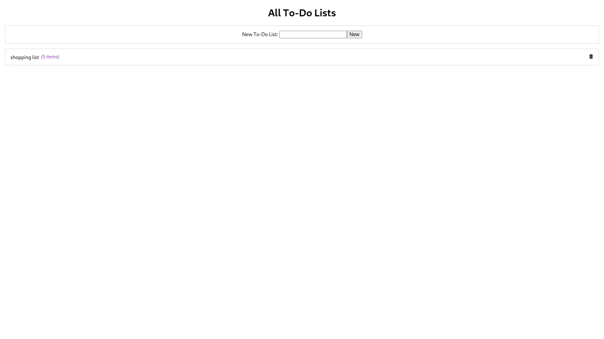
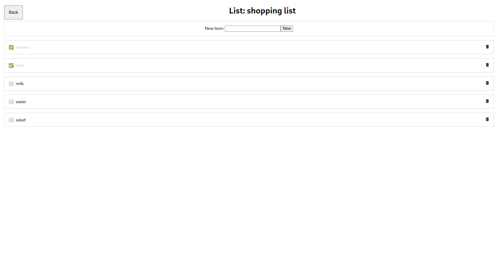

FastAPI Todo List
 About this project
A powerful and efficient Todo List API built using FastAPI, a modern Python web framework with MongoDB as the database.
This Todo List API showcases the speed and simplicity of FastAPI while maintaining high performance. The project leverages FastAPI's automatic data validation and built-in OpenAPI documentation. The API is designed to be easily expandable and incorporates asynchronous request handling for improved performance, with MongoDB providing flexible and scalable data storage.
Technologies
- Python
- FastAPI
- MongoDB
Key Features
- MongoDB Integration: Flexible and scalable data storage using MongoDB for efficient todo item management.